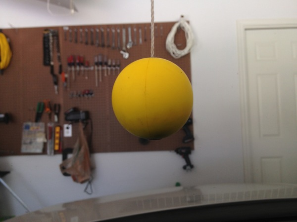

Yesterday's Back to Work covered obsessions, compulsions, and the accompanying a…

One of the best things I did recently was install this yellow ball in our garage. I was obsessive about and compulsively checked my parking after getting out of the car: did I clear the garage door; is there enough room on the passenger side; is it too close to the front of the garage or can I walk to the door? Now, however, I pull into the garage and a little yellow ball drops from the ceiling. I drive forward (and slightly left) until the yellow ball touches the windshield right in front of my face. Then, I get out of the car and walk into my house. I literally never have to think about the position of the car relative to the rest of the garage ever again. My wife expressed some doubts about whether it was needed or if I was installing it to subtly help her poor parking. No, this is about me and my own maladies of making sure I don't dent the trunk lid or slice my leg open on the front license plate when I squeeze by or thwack the driver side in the process of taking a bicycle down off the wall or leave no room on the passenger side for my wife to get into the car without backing out of the garage first. And my life is a mite saner thanks to that little foam ball.